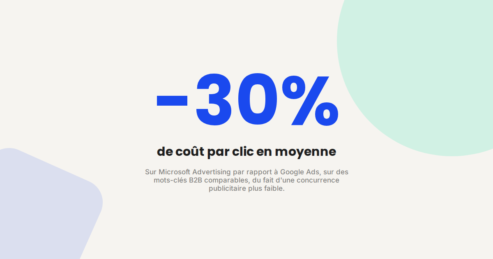
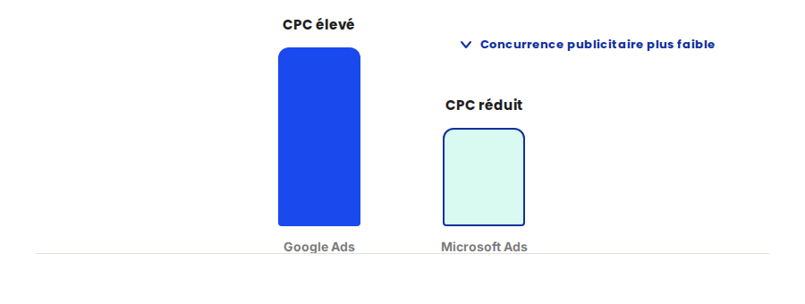

Bing Ads : le canal B2B que tout le monde ignore
Dans la quasi-totalité des audits que je mène, le budget publicitaire d'un annonceur B2B est concentré à 100 % sur Google Ads. Bing Ads (Microsoft Advertising) reste ignoré, alors que son audience professionnelle et sa concurrence publicitaire nettement plus faible en font un canal souvent rentable et sous-exploité.

Microsoft Advertising (l'ancien Bing Ads) alimente les résultats de recherche de Bing, mais aussi ceux de Yahoo et d'une partie du réseau de recherche intégré à Windows et Microsoft 365 — un écosystème professionnel par construction, particulièrement pertinent pour l'acquisition B2B.
Ce qui ne change pas
Les mécaniques de campagne restent proches de celles de Google Ads : enchères sur mots-clés, extensions d'annonces, structure en groupes d'annonces. La logique d'optimisation continue de suivre les mêmes principes que sur SEA — pertinence du message, qualité de la landing page, suivi précis des conversions — le canal change, pas la discipline nécessaire pour le rentabiliser.
Ce qui change vraiment sur Microsoft Advertising
- Une audience professionnelle par défaut. Une part significative du trafic Bing provient d'ordinateurs professionnels sous Windows, avec un usage souvent orienté recherche métier plutôt que grand public.
- Une concurrence publicitaire nettement plus faible. Peu d'annonceurs B2B investissent sur ce canal, ce qui se traduit généralement par des coûts par clic inférieurs à ceux observés sur Google Ads pour les mêmes mots-clés.
- Un import direct des campagnes Google Ads. L'outil d'import natif permet de dupliquer une structure de campagne existante en quelques clics, ce qui réduit fortement le coût de mise en place initial.
- Un volume de recherche plus faible en absolu. Le canal ne remplace pas Google Ads en volume — il vient en complément, avec un rendement souvent supérieur sur le budget qui lui est alloué.

Un exemple qui illustre bien la différence
Pour un client B2B dont l'intégralité du budget SEA était historiquement consacrée à Google Ads, l'ouverture d'un budget test sur Microsoft Advertising via l'import direct des campagnes existantes a permis d'obtenir, sur les mêmes mots-clés, un coût par lead nettement inférieur, avec un volume certes plus modeste mais rentable dès les premières semaines de test.
Ce qu'il faut faire concrètement
- Importez vos campagnes Google Ads existantes via l'outil natif de Microsoft Advertising plutôt que de reconstruire une structure depuis zéro.
- Commencez avec un budget test dédié plutôt que de basculer une part importante du budget SEA global d'un coup.
- Vérifiez que le tracking de conversion est bien configuré spécifiquement sur Microsoft Advertising — un import de campagne ne suffit pas à dupliquer le suivi.
- Comparez le coût par lead, pas seulement le coût par clic, sur une période suffisamment longue pour lisser les variations de volume.
FAQ
Microsoft Advertising fonctionne-t-il uniquement pour du B2B ?
Non, mais c'est le secteur où l'écart de rendement avec Google Ads est le plus fréquemment observé, du fait de l'audience professionnelle du réseau Bing et Windows.
Faut-il refaire toutes les campagnes à zéro sur Microsoft Advertising ?
Non, l'outil d'import natif permet de dupliquer directement une structure de campagne Google Ads existante, ce qui réduit fortement le temps de mise en place.
Quel budget minimum pour tester Microsoft Advertising ?
Il n'y a pas de seuil technique minimum. Un budget test limité sur quelques semaines suffit généralement à évaluer si le canal est rentable pour une activité donnée.
Envie de tester Microsoft Advertising sur votre activité ?
Pour aller plus loin, voir la page Bing Ads freelance, la page SEA, et la page Analytics.
Pour continuer sur ce sujet.